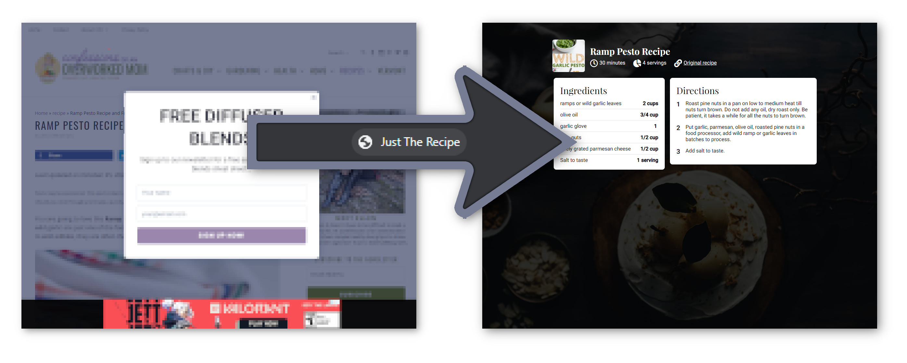

Drag this link to your bookmarks bar to install:

Go to a recipe web page. Click the Open with Just The Recipe bookmarklet to reload the page with Just The Recipe.
Visit the OpenWithJustTheRecipe project page for more information or to report issues.